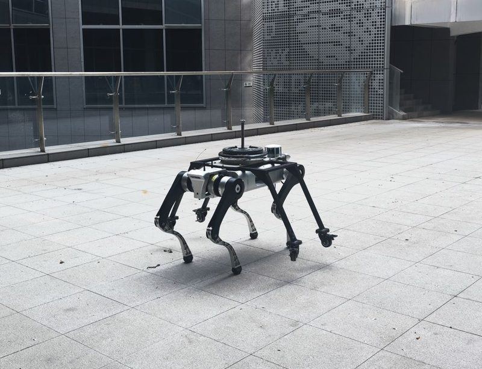
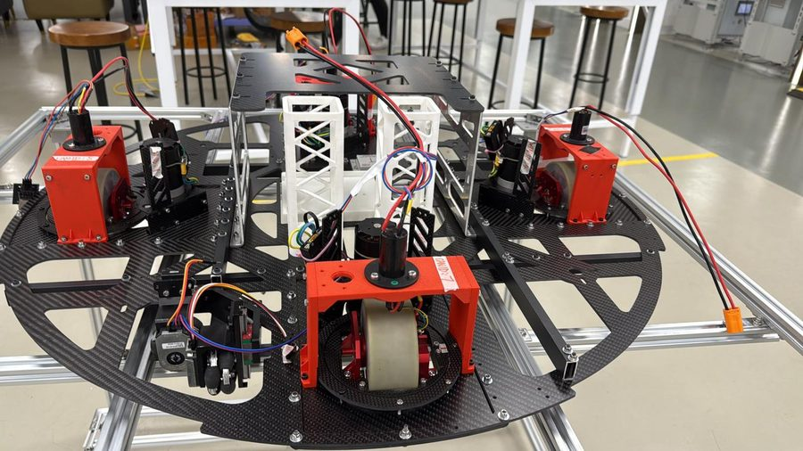
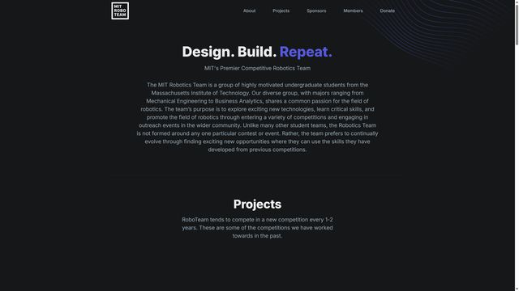
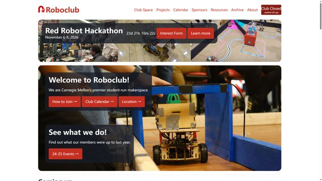
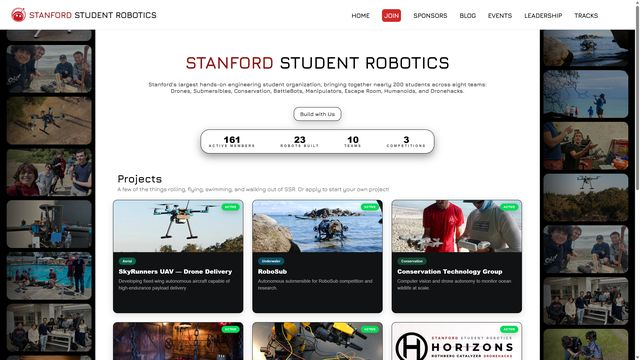
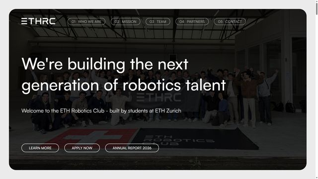
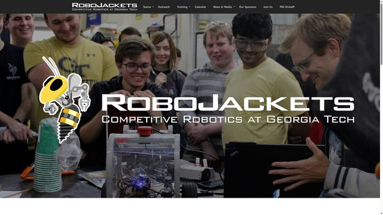
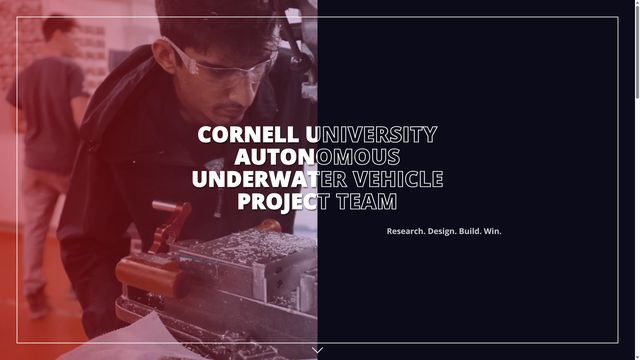
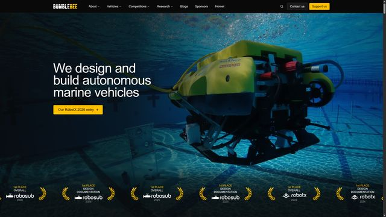
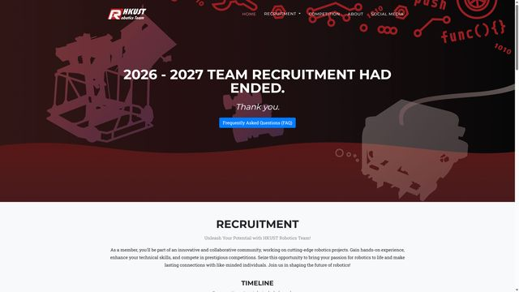

🚁 Drones
Autonomous flight for facade inspection and infrastructure patrol in a high-rise city, with AI defect detection and navigation close to buildings where GNSS is unreliable.
- Defect detection
- Swarms
- Urban navigation
Supported by the Faculty of Engineering · PolyU
Build. Learn. Compete. Create impact.
A student engineering community that builds intelligent drones, robot dogs and unmanned vehicles with embodied AI, and enters international robotics competitions, guided by PolyU staff, the Industrial Centre, an External Advisory Board and PhD-level mentors.




To build a world-class robotics club, first in Hong Kong, then in Asia and the world, and to cultivate outstanding students who can take a real problem all the way to a working, reliable robot.
The club is demanding by design. We train and work to the standard of leading robotics teams at MIT and Stanford, and members who commit gain world-class technology, mentorship, industry connections and a route to PhD study. What you gain
We build intelligent robots, not only machines. Every platform runs the same embodied AI stack, so what members learn on a drone carries over to a robot dog or a self-driving vehicle.
Embodied AI puts artificial intelligence into a physical body. The robot senses the real world, builds an understanding of it, decides what to do and acts, then learns from the result. Models are trained in simulation and tested on real hardware.
Autonomous flight for facade inspection and infrastructure patrol in a high-rise city, with AI defect detection and navigation close to buildings where GNSS is unreliable.
Legged robots that learn to walk with reinforcement learning in simulation, then guide visually impaired people, climb stairs and inspect sites. Members also build their own robot dog.
Self-driving ground robots for campus delivery, patrol and mapping, using LiDAR and camera perception, learning-based planning and control.
Robocon 2027: a manual robot and a fully autonomous robot that must find, pick and place blocks on its own. The route runs from the Hong Kong contest to ABU Robocon in Indonesia.
 2026 recruitment: 203 applications received
The 2026 recruitment campaign received 203 applications. Applicants take a baseline written test and a structured interview. Successful students are placed into a member tier and one of the four technical groups, then complete the safety induction and sign the club rules.
2026 recruitment: 203 applications received
The 2026 recruitment campaign received 203 applications. Applicants take a baseline written test and a structured interview. Successful students are placed into a member tier and one of the four technical groups, then complete the safety induction and sign the club rules.
 Club showcase at PolyU Student Orientation 2026
The club welcomed new students at the PolyU Student Orientation with humanoid and quadruped robots, mobile robots and competition robots on display. Prof. Weisong Wen gave an information session on the club's vision and how students can take part.
Club showcase at PolyU Student Orientation 2026
The club welcomed new students at the PolyU Student Orientation with humanoid and quadruped robots, mobile robots and competition robots on display. Prof. Weisong Wen gave an information session on the club's vision and how students can take part.
 Club reorganisation briefing at the Industrial Centre
Prof. Weisong Wen and the Industrial Centre briefed members on the club's new structure: three member tiers with public promotion criteria, four technical groups, a written proposal and oral defence for every funded project, and mandatory documentation and handover.
Club reorganisation briefing at the Industrial Centre
Prof. Weisong Wen and the Industrial Centre briefed members on the club's new structure: three member tiers with public promotion criteria, four technical groups, a written proposal and oral defence for every funded project, and mandatory documentation and handover.
 Two PolyU teams compete at the Robocon 2026 Hong Kong Contest
PolyU entered two teams, PolyBotics and Redbricks, in the Robocon 2026 Hong Kong Contest, where 15 teams from 9 local universities and institutions competed on the “Kung Fu Quest” theme. Each team built a manual Robot 1 and an autonomous Robot 2 for weapon assembly, Kung Fu Scroll handling in the Meihua Forest and a tic-tac-toe finish.
Two PolyU teams compete at the Robocon 2026 Hong Kong Contest
PolyU entered two teams, PolyBotics and Redbricks, in the Robocon 2026 Hong Kong Contest, where 15 teams from 9 local universities and institutions competed on the “Kung Fu Quest” theme. Each team built a manual Robot 1 and an autonomous Robot 2 for weapon assembly, Kung Fu Scroll handling in the Meihua Forest and a tic-tac-toe finish.
The competitions our teams train for, and the kind of robot we aim to build. Videos play from YouTube.
With thanks to the university and industry partners who support our students. Would you like to support the club? See Donate and Partner.
 University
University Faculty support
Faculty support Legged and humanoid robots
Legged and humanoid robots Logistics
Logistics Embodied intelligence
Embodied intelligence Applied research
Applied researchStudent robotics clubs at leading universities that we study and learn from. Click a card to visit their website.

MIT Robotics TeamMIT · USAChanges competition every one to two years, including RoboCup Soccer and RoboCup Rescue, with mechanical, electrical and software subteams.
RoboclubCarnegie Mellon University · USAA student-run makerspace with long-term projects such as Robobuggy and quadrupeds, a yearly hardware hackathon and small project grants.
Stanford Student RoboticsStanford University · USAAbout 200 students in teams for delivery drones, underwater robots, conservation technology, manipulators and humanoids.
ETH Robotics ClubETH Zurich · SwitzerlandMore than 400 members building a student humanoid robot, autonomous racing drones and dexterous manipulation, from hardware to software.
RoboJacketsGeorgia Tech · USACompetition teams in RoboCup, autonomous navigation, robot racing and combat robotics, with structured mechanical, electrical and software training.
CUAUVCornell University · USADesigns and builds new autonomous submarines every year; a seven-time RoboSub champion.
Bumblebee Autonomous SystemsNational University of SingaporeAutonomous underwater, surface and aerial vehicles; winner of RoboSub and RobotX, with open-source software.
HKUST Robotics TeamHKUST · Hong KongFounded in 2004, with Robocon, underwater ROV, intelligent racing and UAV subteams and a training-then-selection recruitment.Where visitors to this site come from.